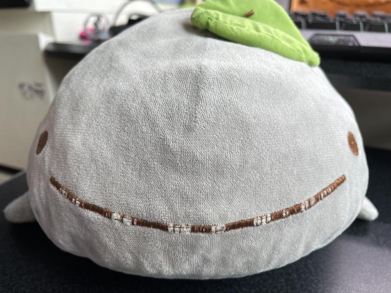

Nandemonaiya
by Radwimps
[Verse 1]
Futari no aida toorisugita kaze wa
Doko kara sabishisa wo hakondekita no
Naitari shita sono ato no sora wa
Yake ni sukitootteitari shitanda
Itsumo wa togatte tachichi no kotoba ga
Kyou wa atatakaku kanjimashita
Yasashisa mo egao mo yume no katarikata mo
Shiranakute zenbu kimi wo maneta yo
[Pre-Chorus]
Mou sukoshi dake de ii ato sukoshi dake de ii
Mou sukoshi dake de ii kara
Mou sukoshi dake de ii ato sukoshi dake de ii
Mou sukoshi dake kuttsuiteiyou ka
[Chorus]
Bokura taimufuraiyaa toki wo kakeagaru kuraima
Toki no kakurenbo hagurekko wa mou iya nanda
Ureshikute naku nowa kanashikute warau nowa
Kimi no kokoro ga kimi wo oikoshitanda yo
[Verse 2]
Hoshi ni made negatte te ni ireta omocha mo
Heya no sumikko ni ima korogatteru
Kanaetai yume mo kyou de hyakko dekita yo
Tatta hitotsu to itsuka koukanko shiyou
Itsumo wa shaberanai ano ko ni kyou wa
Houkago "mata ashita" to koe wo kaketa
Narenai koto mo tama ni nara ii ne
Toku ni anata ga tonari ni itara
[Pre-Chorus]
Mou sukoshi dake de ii ato sukoshi dake de ii
Mou sukoshi dake de ii kara
Mou sukoshi dake de ii ato sukoshi dake de ii
Mou sukoshi dake kuttsuiteiyou yo
[Chorus]
Bokura taimufuraiyaa kimi wo shitteitanda
Boku ga boku no namae wo oboeru yori zutto mae ni
[Bridge]
Kimi no inai sekai ni mo
Nanika no imi wa kitto atte
Demo kimi no inai sekai nado
Natsuyasumi no nai hachigatsu no you
Kimi no inai sekai nado
Warau koto nai santa no you
Kimi no inai sekai nado
[Pre-Chorus]
Bokura taimufuraiyaa toki wo kakeagaru kuraimaa
Toki no kakurenbo hagurekko wa mou iya nanda
Nandemo nai ya yappari nandemo nai ya
Ima kara iku yo
[Chorus]
Bokura taimufuraiyaa toki wo kakeagaru kuraimaa
Toki no kakurenbo hagurekko wa mou ii yo
Kimi wa hade na kuraiyaa sono namida tometemitai na
Dakedo kimi wa kobanda
Koboreru mama no namida wo mite wakatta
Ureshikute naku no wa kanashikute warau nowa
Boku no kokoro ga boku wo oikoshitanda yo

Nago gonna kill you nownow solve this: 8x2 + 5x - 2 = 0 C2H4